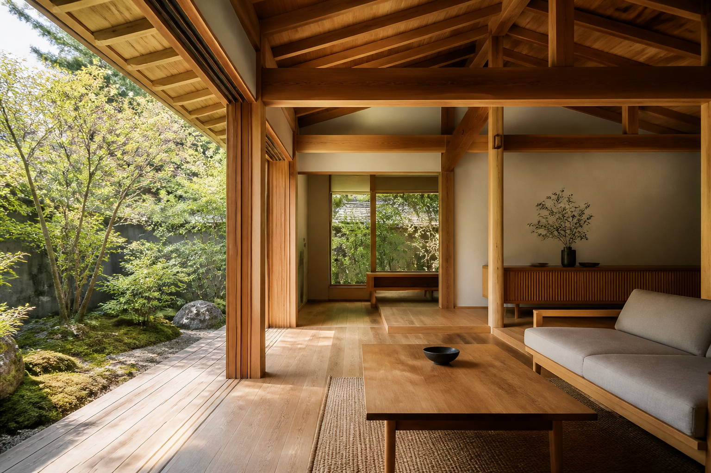

庭と暮らす平屋
深い軒、縁側、庭へ抜ける大きな開口。老後まで暮らしやすい一棟。

Natural wooden homes
都市の便利さを離れず、木と庭の気配を日常に戻す。森野工務店は、土地探しから設計、施工、入居後の手入れまで伴走する小さな工務店です。
家づくり相談をするWhat’s Morino Komuten?
Area
名古屋市、春日井市、一宮市、岐阜市、桑名市など。土地探しから相談できます。
Architecture
深い軒、縁側、庭へ抜ける大きな開口。老後まで暮らしやすい一棟。
限られた敷地でも光と風を入れる。家族の気配がつながる設計。
既存の梁や建具を活かしながら、断熱と水回りを今の暮らしへ。
Experience
自然光、造作デスク、静かな壁。リモートワークに必要な余白を設計します。
回遊できるキッチン、収納、家族の会話が生まれるダイニング。
無垢床、塗り壁、庭の緑。毎日の疲れを静かにほどく空間。
Lifestyle support
Price
延床28坪・自然素材仕様の参考価格。土地代、外構、諸費用は別途。リノベーションは内容に応じて個別見積です。
概算を相談するOwner voices
共働きで忙しい毎日でも、窓を開けたときの木の匂いと庭の緑で気持ちが整います。打ち合わせで暮らし方まで聞いてもらえたのが安心でした。
名古屋市 / 30代ご夫婦